はい、皆さんこんにちは。メンタエクセルのTAKUYAです。今回はですね、Microsoft Copilot入門というテーマで、音声付きの電子書籍を作ってみました。
この本、僕の声で読み上げが自動で進んで、今読んでいるところに蛍光ペンでマーカーが引かれて、ページも勝手にめくれていくんですよ。読み上げの速度は下のバーで変えられますし、図解や画面はクリックすると大きく表示できます。なので皆さんは、聴きながら眺めているだけでOKです。
それではですね、一緒に学んでいきましょう。
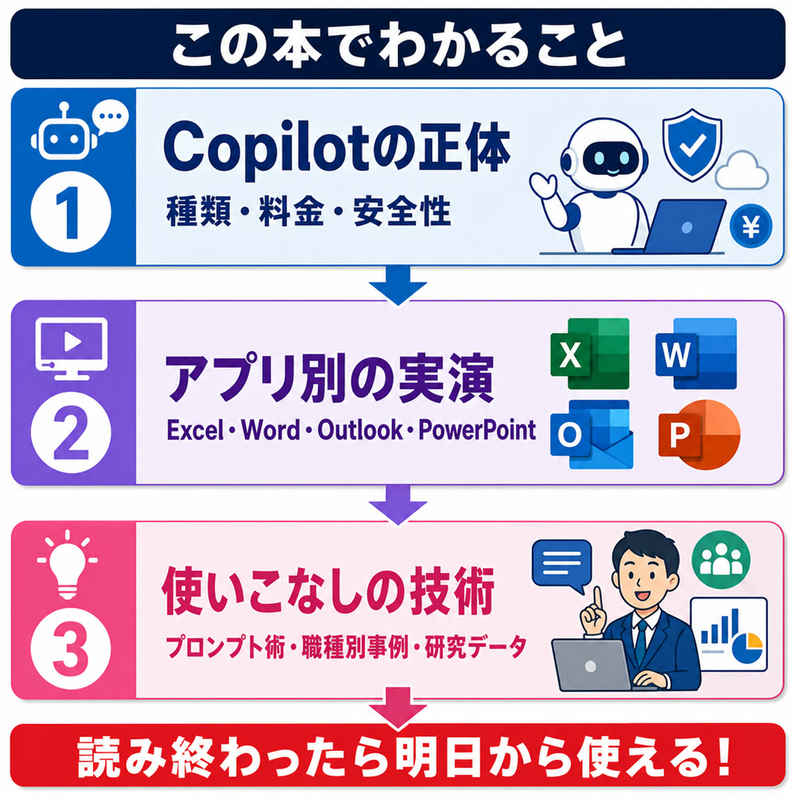
で、先にこの本の全体像をお伝えしておきますね。前半では、Copilotの正体と、皆さんの会社で追加費用なしでどこまで使えるのかという話をしていきます。真ん中では、ExcelやWord、Outlookでの実演を、実際の画面と一緒に見ていきます。
で、後半は、上手なお願いの仕方と、職種別の活用例、あとは世界の研究データですね。読み終わる頃には、明日から会社で使えるレベルになっているんじゃないかなと思います。
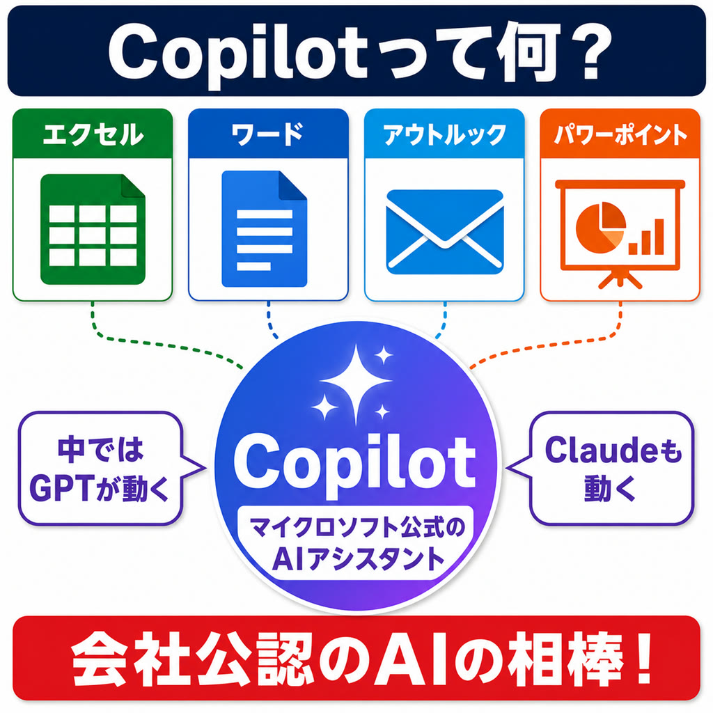
で、まずCopilotって何なのかという話なんですけれども。皆さん、ChatGPTは聞いたことありますよね。Copilotっていうのは、簡単に言うとマイクロソフト公式のAIアシスタントですね。
ExcelやWordと同じマイクロソフトの世界の中で、安全に使えるように作られているんですよ。イメージとしては、会社公認のAIの相棒という感じですね。
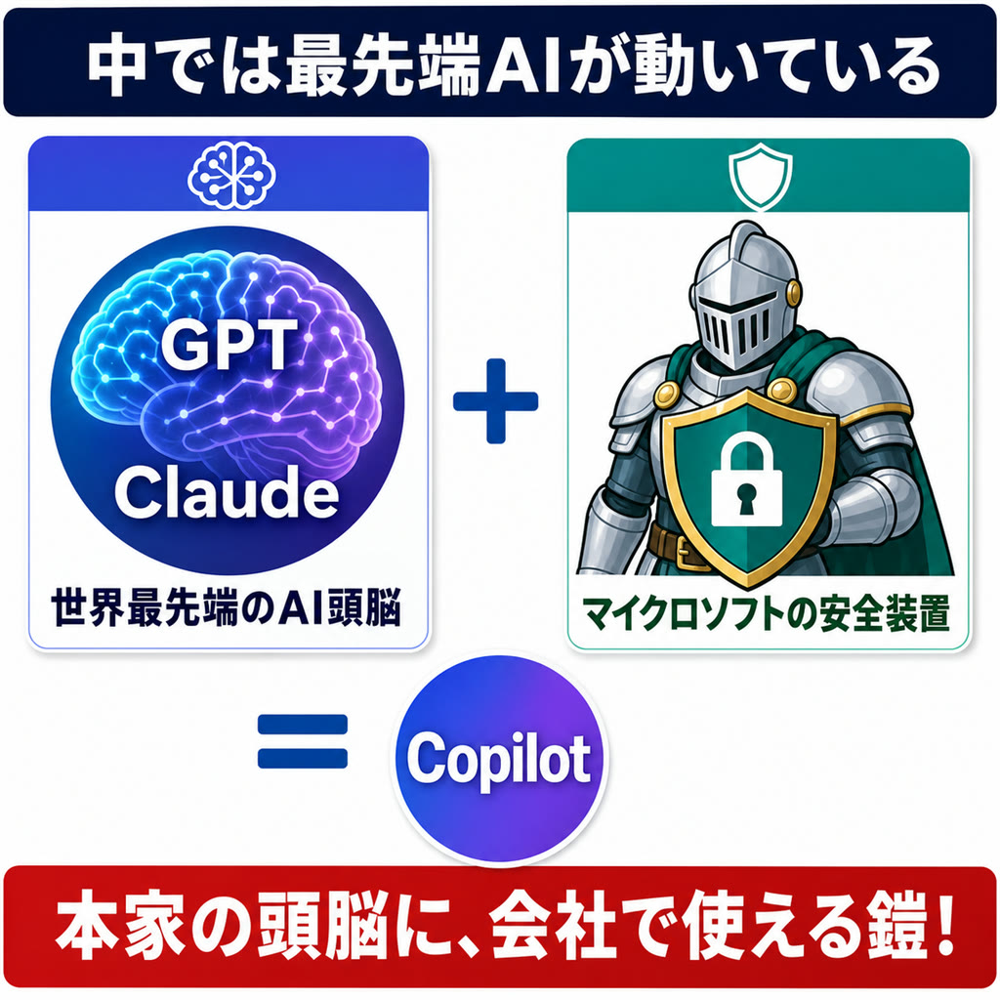
で、このCopilot、中身は何なのかというと、実はChatGPTで有名なGPTとかClaudeとか、世界最先端のAIがそのまま動いているんですよ。つまり、性能は本家のAIと同じレベルで、そこにマイクロソフトの安全装置がついている。どういうことかというと、AIの頭脳はそのままで、会社で使える鎧を着せたのがCopilotということですね。
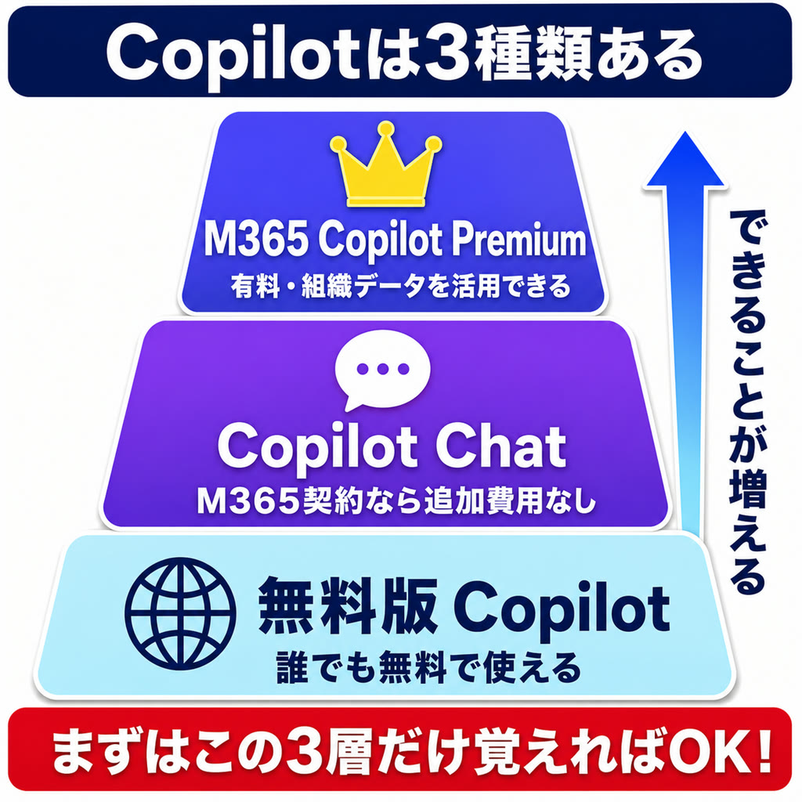
で、ここが結構大事なポイントなんですけれども、Copilotには大きく3つの階層があるんですよ。1つ目が、誰でも無料で使えるCopilot。2つ目が、Microsoft 365の契約についてくるCopilot Chat。
で、3つ目が、有料版のMicrosoft 365 Copilot、いわゆるPremiumですね。上に行くほど、できることが増えていきます。この3層構造、ざっくりでいいので覚えておいていただけたらなと思います。
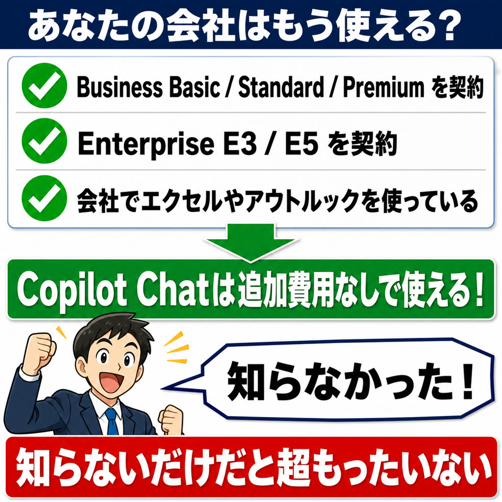
で、ここからが本題なんですけれども。皆さんの会社がMicrosoft 365のBusinessプラン、つまりBasicとかStandardとかPremiumを契約していたら、Copilot Chatは追加費用なしでもう使えるんですよ。E3やE5といった大企業向けのプランでも同じですね。
会社でExcelやOutlookを使っている方なら、ほぼ間違いなく対象です。知らないだけだと、めちゃくちゃもったいないですよということですね。
じゃあ有料版はいくらなのかというと、大体月々4,500円ぐらい。中小企業向けだと、月2,700円ぐらいのプランもあります。高いなと感じた方に、ちょっと僕の考えをお伝えしますね。
AIへの課金って、道具を買うんじゃなくて、時間を買ってる感覚なんですよ。1時間かかってた資料が10分で終わるなら、毎回50分戻ってくる。月なら十数時間ですよ。
なのでまずは追加費用なしの範囲で使い倒して、物足りなくなったら、時間を買う投資として有料版を検討する。この順番でOKです。
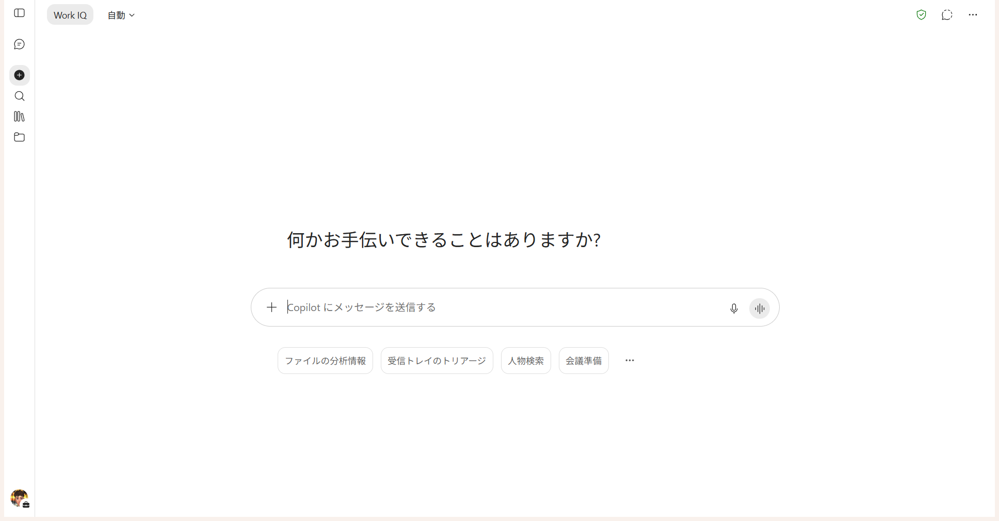
それではですね、開き方を見ていきましょう。ブラウザで、m365.cloud.microsoft にアクセスすると、こちらのようなチャット画面が出てきます。会社のアカウントでサインインするだけで、もう使える状態ですね。この画面が出たら、準備は完了です。
あとは、ExcelやWordの画面にもCopilotのボタンがございます。画面の右上や右下に、丸いCopilotのマークがあるので、そこを押すと画面の右側にチャットが開くんですね。ブラウザ版のOfficeでも、デスクトップ版でも使えます。
作業しながら、横で相談できるというのがポイントですね。
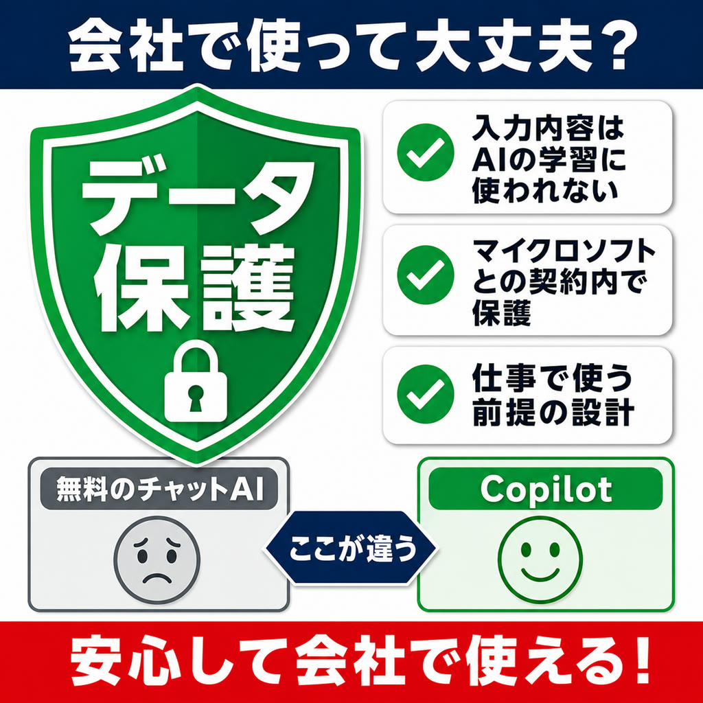
会社の情報をAIに入れて大丈夫なの、って心配になった方もいると思うんですけれども、ご安心ください。マイクロソフトが公式に明言していて、Copilotに入力した内容が、AIの学習に使われることはありません。データは会社のメールやファイルと同じ契約の中で保護されて、自分に閲覧権限のない情報には、Copilotもアクセスできない仕組みになっているんですね。
仕事で使う前提で設計されているということです。
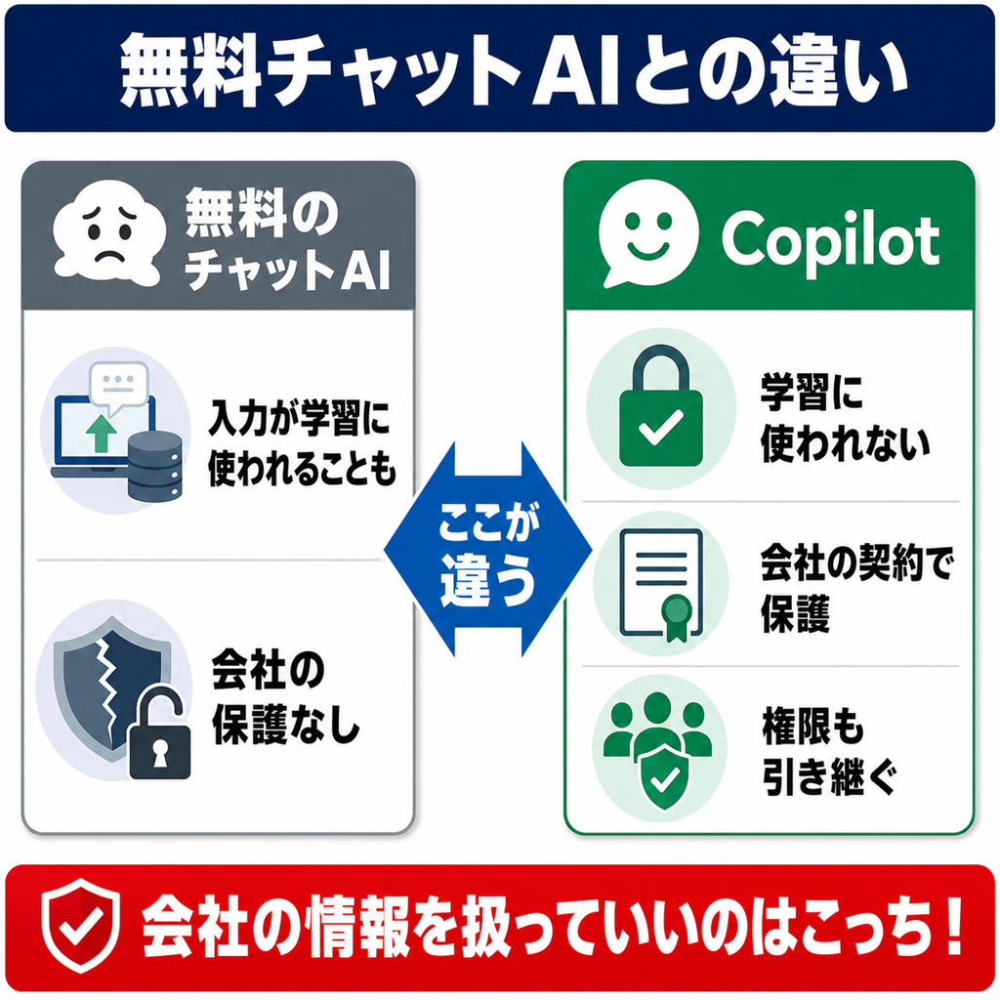
で、無料のチャットAIと何が違うのかというと、一番の違いは契約上の保護なんですよ。無料のAIは、入力内容が学習に使われる設定になっていることがあるんですね。でもCopilotは、会社のアカウントで入れば、エンタープライズデータ保護というのが自動で有効になります。
つまり、会社の情報を扱っていいAIかどうか、ここで線が引かれるということですね。
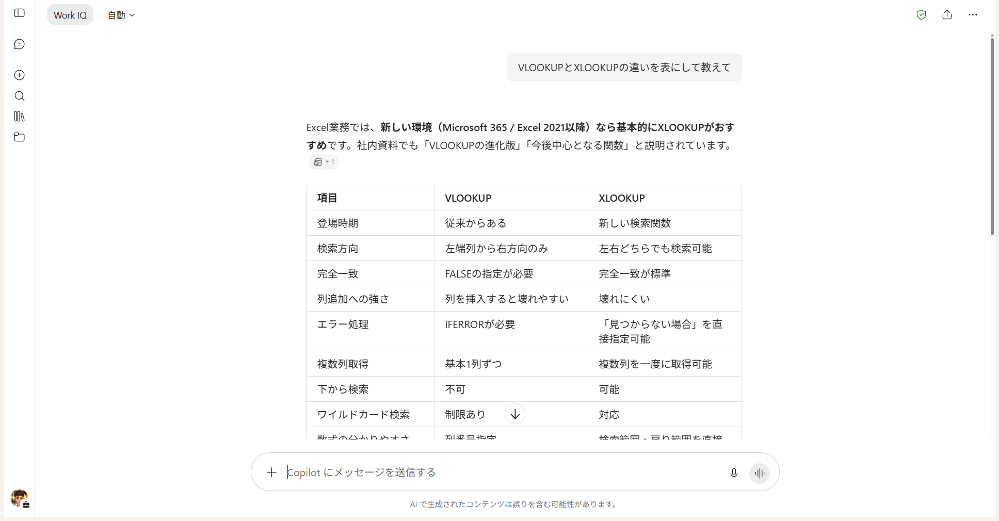
それでは、実演に入っていきましょう。まずは一番簡単な使い方、普通に質問してみるところからですね。こちらの画面では、実際に、VLOOKUPとXLOOKUPの違いを表にして教えて、とお願いしてみました。そうすると、このように一瞬で、わかりやすい表で答えが返ってくるわけですよ。ChatGPTと同じ感覚で使っていただいてOKです。
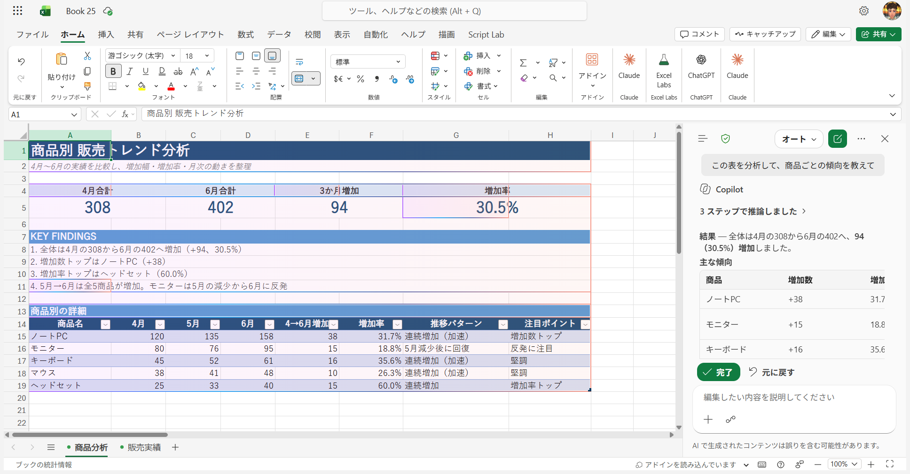
次は、Excelとの組み合わせですね。売上表を開いて、この表を分析して、商品ごとの傾向を教えて、とお願いしてみました。そうすると、ご覧のとおり、表を読み取って、分析シートを丸ごと自動で作ってくれたんですよ。合計や増加率の計算から、注目ポイントの解説まで入っています。正直、これが一番感動するところじゃないかなと思います。
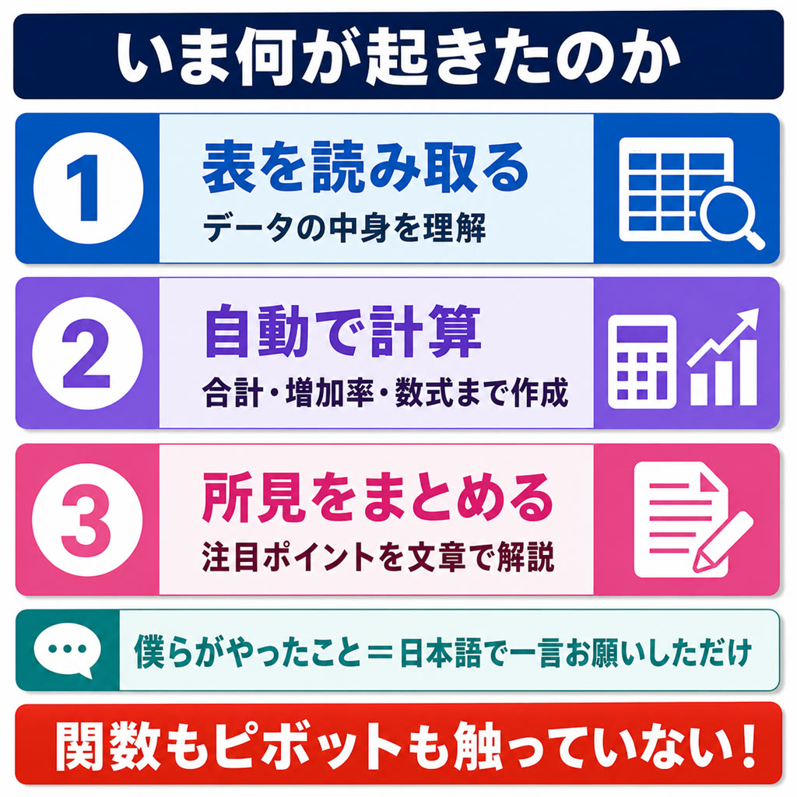
で、今の画面で何が起きたのか、解説しますね。Copilotは表の中身を読み取って、まず全体の合計と増加率を計算しました。で、伸びている商品と落ちている商品を見つけて、注目ポイントとして文章でまとめてくれたわけです。
ここまで全部、日本語で一言お願いしただけです。関数もピボットテーブルも、僕らは一切触っていないんですね。
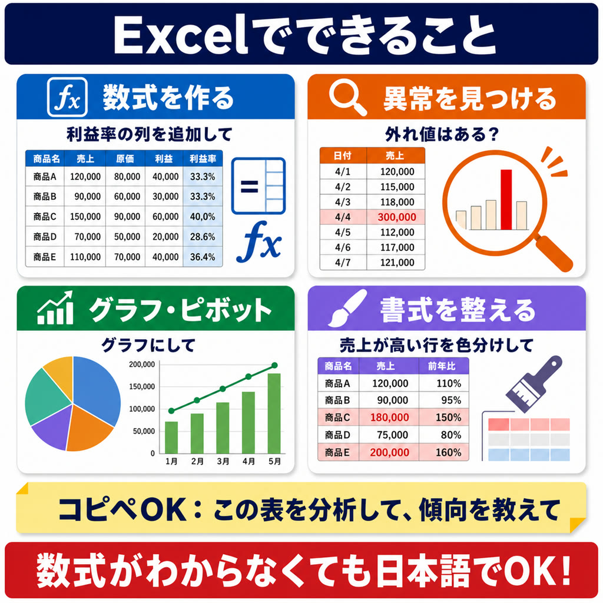
Excelでできることは、他にもたくさんあります。例えば、利益率を計算する列を追加して、と言えば数式ごと作ってくれますし、外れ値はある、と聞けば異常値を見つけてくれる。あとは、グラフやピボットテーブルの作成、条件付き書式の設定なんかも、全部お願いできます。
数式がわからなくても、日本語で言えばいいんです。Excelの苦手意識がなくなる感覚、ぜひ体感していただきたいです。
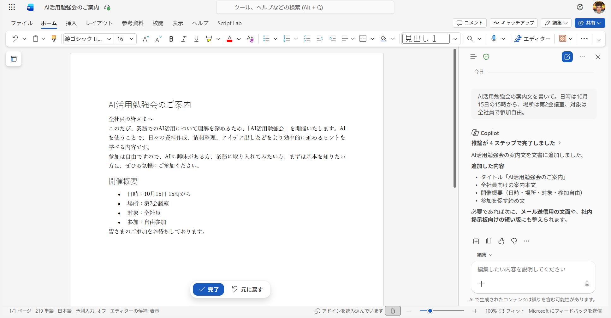
で、Wordでも同じことができます。例えば、AI活用勉強会の案内文を書いて、とお願いすると、このように下書きを一気に作ってくれるわけですよ。ゼロから書き始めるのって、結構しんどいじゃないですか。その最初の一歩をCopilotに任せて、僕らは仕上げだけやると。これだけで文書作成は、めちゃくちゃ楽になりますね。
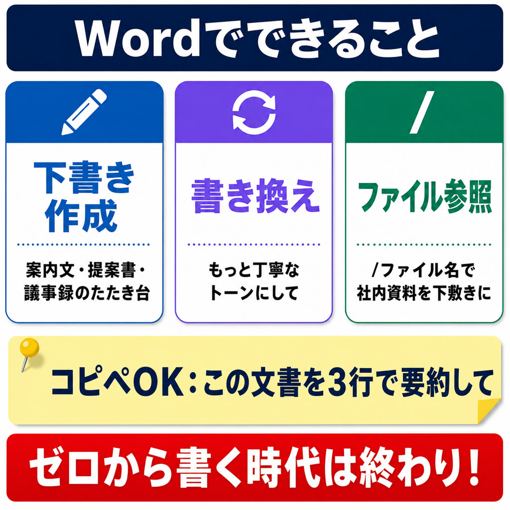
Wordでは他にも、書き終わった文章を選んで、もっと丁寧なトーンに書き換えて、とか、この文書を要約して、みたいなこともできます。で、意外と知られていないのが、スラッシュを打ってファイル名を指定すると、社内の資料を参照しながら下書きしてくれる機能ですね。過去の提案書を下敷きに、新しい提案書を作る、なんてこともできちゃうわけです。
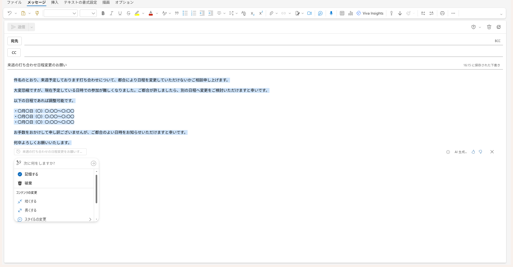
あとは、Outlook、メールですね。こちらの画面では、来週の打ち合わせの日程変更をお願いする、丁寧なメールを書いて、とお願いしました。そうすると、件名から本文まで、ちゃんと敬語のメールを一瞬で作ってくれるんですよ。候補日の枠まで用意してくれていますね。あとは自分で日付を入れて送るだけ、という感じです。
で、メールで一番時間を取られるのって、長いやり取りの把握じゃないですか。Copilotなら、何十往復したスレッドでも、要約して、の一言で要点だけ出してくれます。さらに、書いた下書きのトーンや伝わりやすさを、コーチングしてくれる機能まであるんですね。
毎日のメール処理の時間が、がっつり変わってきますよということです。
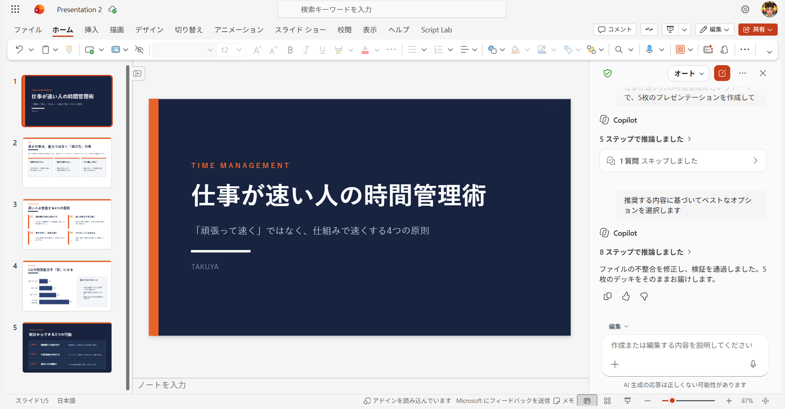
次は、PowerPointですね。こちらでは、仕事が速い人の時間管理術というテーマで、5枚のプレゼンテーションを作成して、とお願いしてみました。そうすると、デザインの雰囲気を選ぶだけで、スライドを丸ごと作ってくれるんですよ。構成から見出し、本文まで自動です。たたき台が数分でできるので、資料作成の景色が変わりますね。
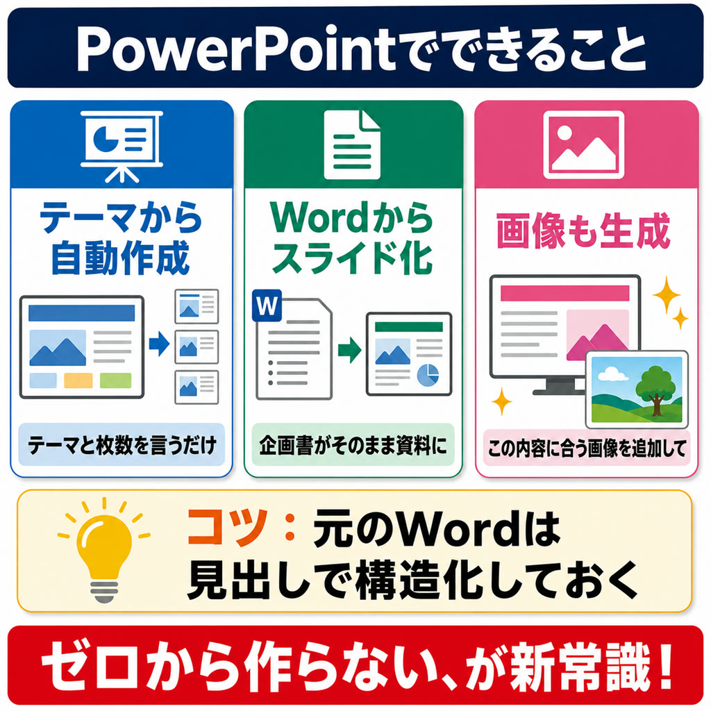
PowerPointでは他にも、Wordの企画書を渡して、そのままスライド化したり、この内容に合う画像を追加して、と画像を生成させたりもできます。コツはですね、元のWord文書を見出しで構造化しておくこと。これだけで仕上がりが全然変わってきます。
ゼロから作らないっていうのが、新しい常識になるという感じですね。
で、会議のTeamsですね。Copilotを入れると、会議の要約、誰が何を言ったか、決まったこと、宿題の一覧まで、自動でまとめてくれるんですよ。遅れて参加しても、ここまでの流れを教えて、と聞けば追いつけます。
マイクロソフトの調査だと、欠席した会議のキャッチアップが約4倍速くなったというデータもあるんですね。議事録係が、もういらなくなっちゃうわけです。
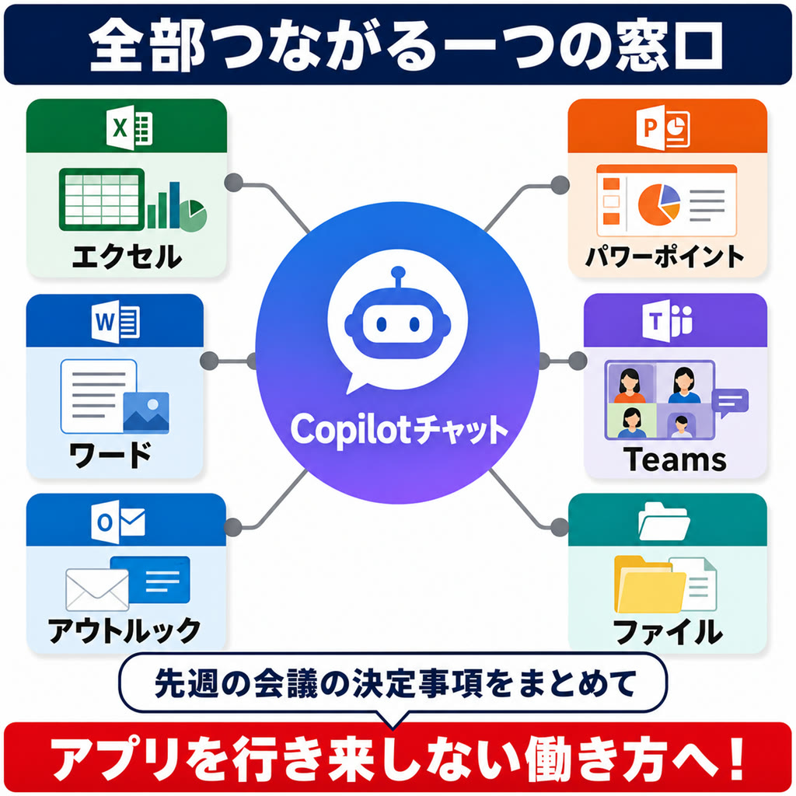
で、実はここまでのアプリ別の話を、ぜんぶ一つの窓口でできるのが、Copilotチャットなんですね。有料版だと、会社のメール、ファイル、会議とつながるので、例えば、先週の会議の決定事項をまとめて、とか、この案件に詳しい人は誰、みたいな聞き方ができちゃう。アプリを行き来しなくても、聞けば出てくる。
これが本当の実力ということですね。
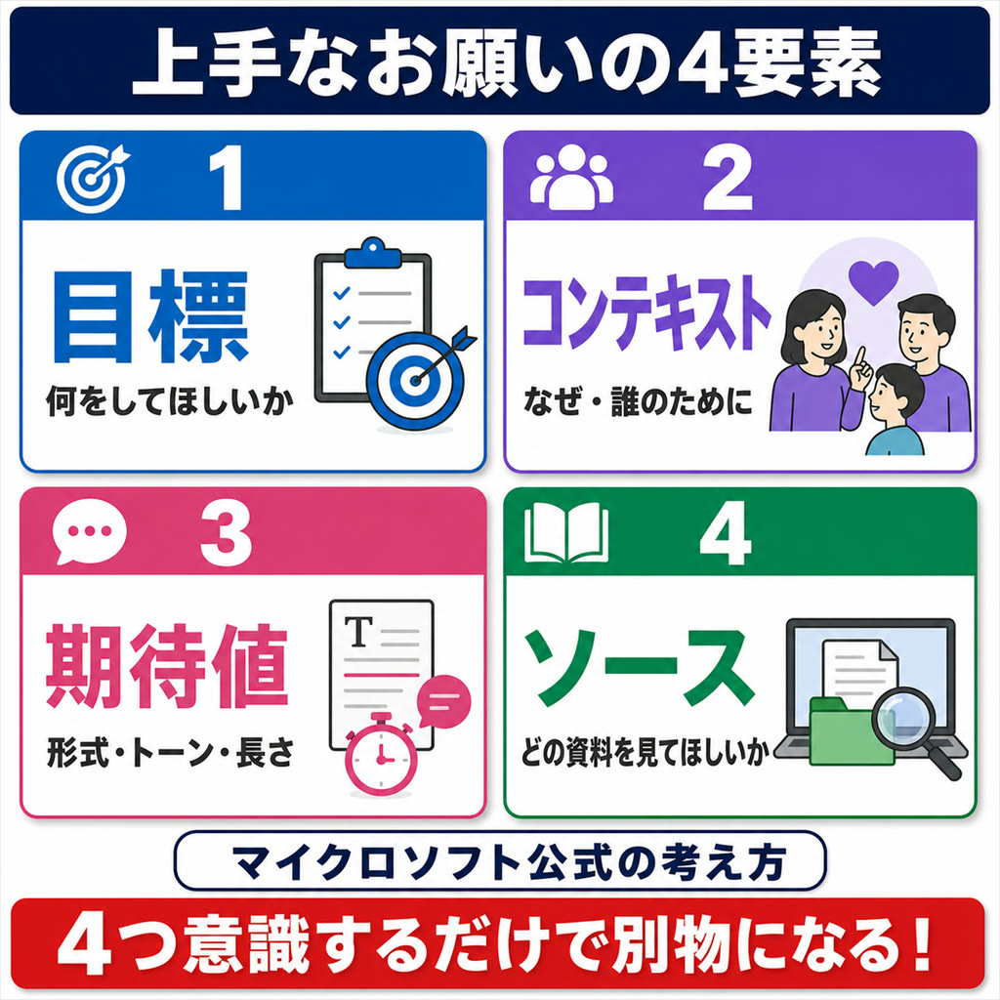
ここからは、上手なお願いの仕方ですね。マイクロソフトが公式に出しているコツが、4つの要素なんですよ。1つ目、目標。
何をしてほしいか。2つ目、コンテキスト。なぜ、誰のためか。
3つ目、期待値。どんな形式でほしいか。で、4つ目、ソース。
どの資料を見てほしいか。この4つを意識するだけで、返ってくる答えの質が別物になります。これ、めちゃくちゃ大事です。
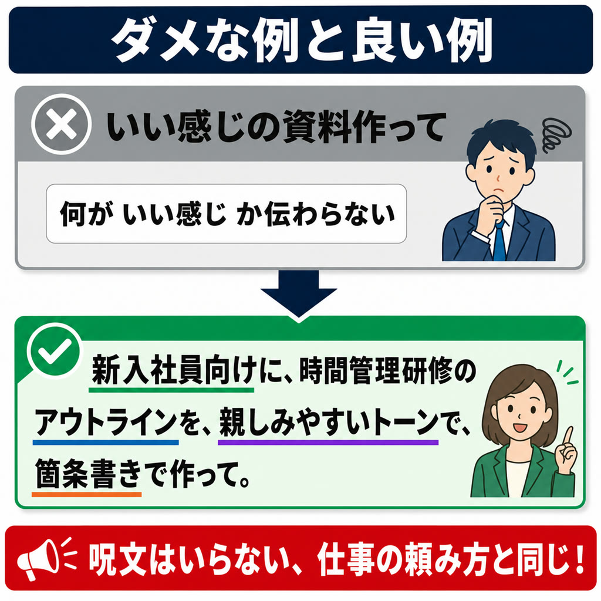
例えばですね、ダメな例が、いい感じの資料作って。これだと、いい感じの中身がAIに伝わらないんですよ。良い例は、新入社員向けに、時間管理研修のアウトラインを、親しみやすいトーンで、箇条書きで作って。
目標、相手、トーン、形式が全部入ってますよね。呪文はいらないんです。人に仕事を頼むときと同じ伝え方でいい、ということですね。
で、一発で完璧なものを求めない、というのも大事なコツですね。返ってきたものに、もっと短く、とか、表にして、とか、別の案もちょうだい、と追加でお願いすればいいんです。人に頼むときと違って、AIは何回やり直させても嫌な顔ひとつしません。
会話しながら仕上げていく。この感覚を掴んだ人から、どんどん速くなっていきます。
で、ここからは僕の持論なんですけれども、AIへの頼み方で一番大事なのは、作業を渡すんじゃなくて、仕事ごと渡すことなんですよ。どういうことかというと、セルをこう直して、と頼むと、指示した分しか返ってこないんです。でも、この資料を仕上げて、と頼むと、段取りから確認までまとめて返ってくるんですね。
手順を細かく指示するほど、AIは道具のままです。任せるほど、部下になっていくわけです。ゴールと条件だけ伝えて、途中のやり方は任せてみてください。
もう一つ、僕がずっと言っているのが、目指すのは○○長のポジションだ、という話です。雑誌なら、記事を直しているのが編集で、方向を決めるのが編集長じゃないですか。今のAIの使い方って、多くの人が編集の側にいるんですよ。
指示は出すけど、結局自分が手を動かして仕上げている。そうじゃなくて、AIを作業者として何人も動かして、自分は判断と方向づけに回る。ここに回れた瞬間から、仕事の進み方が全然変わります。
で、お願い文を自分で考えるのが大変、という方に朗報なんですけれども、Copilotにはプロンプトギャラリーという、公式のお手本集が用意されているんですよ。マイクロソフトが作った実用プロンプトがずらっと並んでいて、気に入ったものは保存も、チームへの共有もできちゃいます。まずはここから真似して、自分用に少し書き換える。
これが一番の近道かなと思います。
ここからは、職種別の活用ですね。まず営業の方。商談前に、この会社の最新情報をまとめて、で下調べが数分で終わります。
で、商談後は、会議メモから、お礼メールと次のアクションを作って、と頼めばOKです。提案書も、過去の資料を参照させて、たたき台を作らせればいいわけですね。マイクロソフトの調査では、営業担当者は時間の7割を事務作業に取られているそうなので、ここが削れると強いですよね。
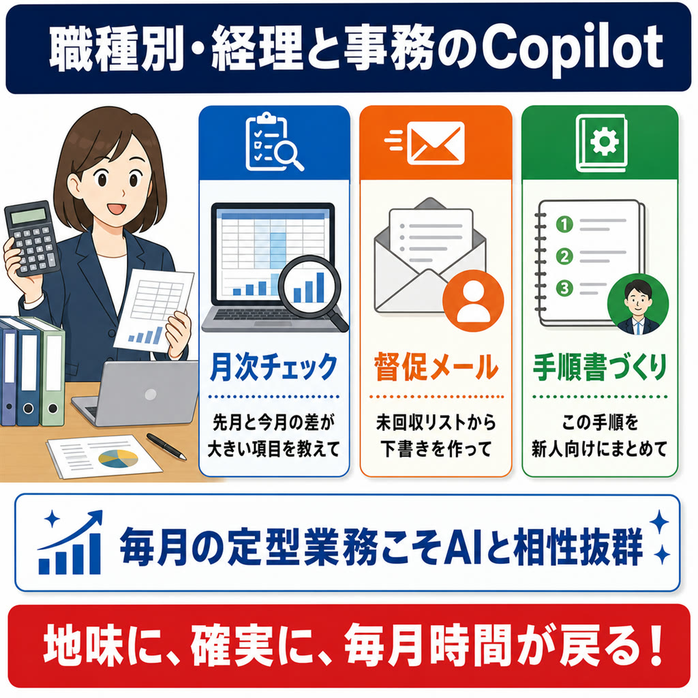
次に、経理や事務の方ですね。毎月の定型業務が、AIと相性抜群なんですよ。Excelで、先月と今月の差が大きい項目を教えて、とチェックさせたり、未回収リストから督促メールの下書きを作らせたり。
あとは、この手順を新人向けの手順書にまとめて、みたいな使い方も効きますね。地味だけど、確実に毎月の時間が戻ってくる領域です。
で、企画やマーケティングの方。市場調査の要約、キャンペーン結果のレポート、企画書のたたき台、このあたりが得意技ですね。例えば、ターゲット別に訴求メッセージを3案ずつ出して、みたいなアイデア出しの壁打ち相手としても優秀です。
ゼロから考える時間を、選んで磨く時間に変えられるということですね。
あとは、管理職の方ですね。マイクロソフトが公開している一日のモデルケースだと、朝は溜まったメールをCopilotで大体20分ぐらいで処理して、出られなかった会議は要点だけ把握。で、部下への返事も、過去のやり取りを要約させてから書く。
読む時間を減らして、判断する時間を増やす。これが管理職のCopilot活用の本質かなと思います。
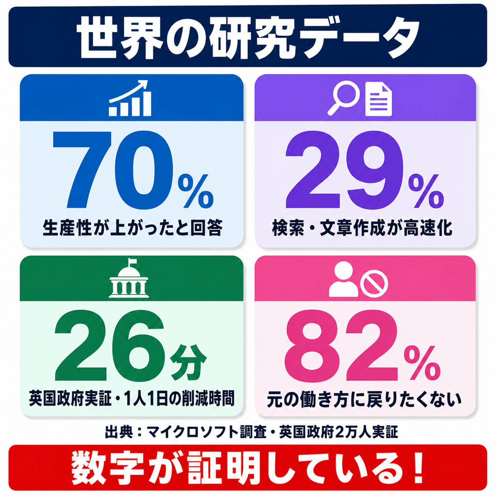
で、ここからは数字の話ですね。マイクロソフトの調査では、Copilot利用者の70%が、生産性が上がったと答えていて、検索や文章作成は29%速くなったんですね。で、僕が一番すごいと思ったのが、イギリス政府の実証実験ですね。
公務員2万人で試したら、1人あたり1日26分の時間削減。しかも82%が、もう元の働き方には戻りたくない、と答えたんです。
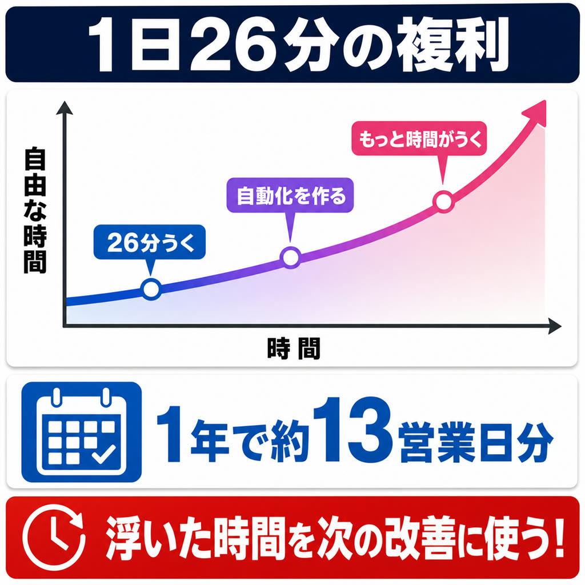
1日26分って聞くと、大したことないように思うかもしれません。でもですね、毎日積み重なると、1年で約13営業日分。ほぼ2週間半の休みが生まれる計算です。
で、大事なのはここからで、浮いた時間を次の改善に使うんですよ。僕はこれを、時短の複利と呼んでいます。空いた時間で、また一つ自動化を作ると、さらに時間が空くんですね。
この繰り返しで、最強の個人に近づいていくんじゃないかなと思います。
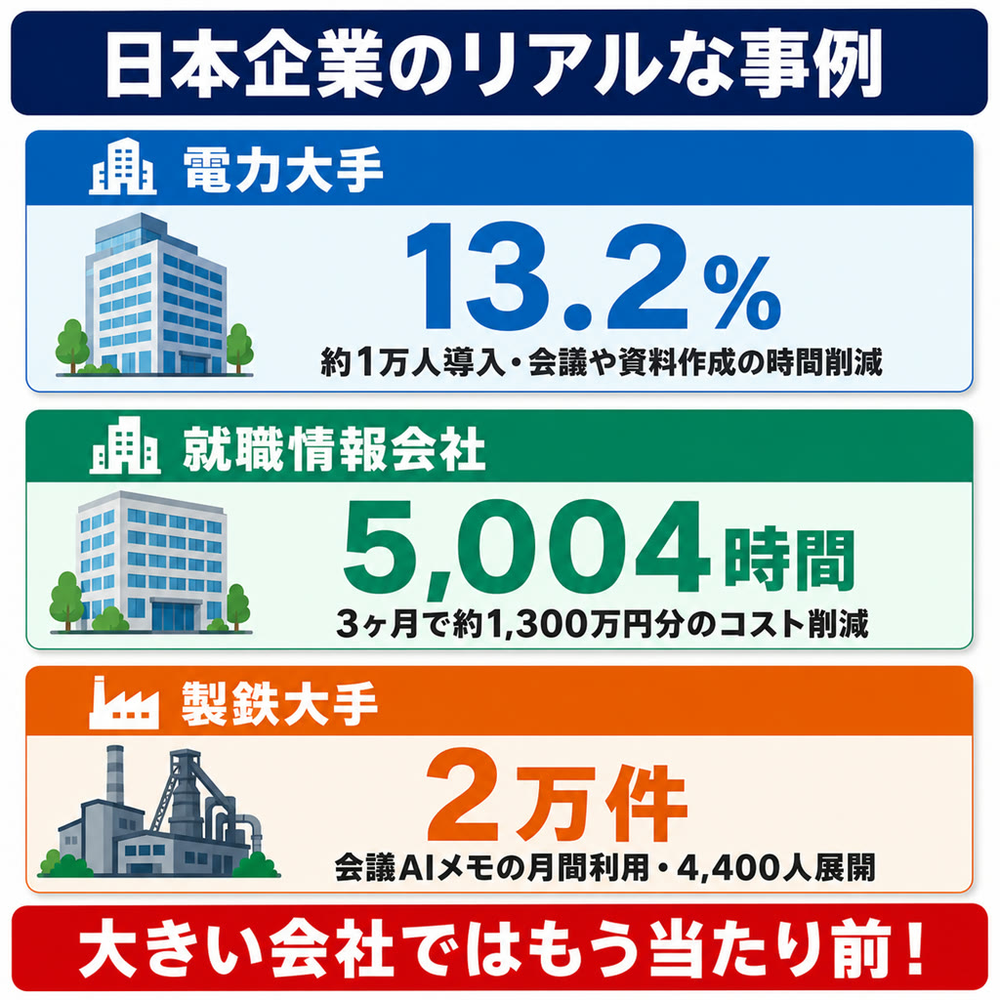
日本企業でも、結果が出ています。九州電力グループは約1万人に全社導入して、会議や資料作成の時間を最大13.2%削減。就職情報の学情は、導入3ヶ月で5,004時間、金額にして約1,300万円分のコスト削減を達成したそうです。
日本製鉄も4,400人に展開して、会議のAIメモが1ヶ月で2万件使われたと。もう、大きい会社では当たり前になりつつあるんですね。
とはいえ、うまくいかない会社もあるんですよ。よくあるのが、導入したけど何に使えばいいかわからなくて、誰も使わなくなるパターン。実際、導入企業の4割以上が定着に悩んでいる、という調査もあります。
で、突破のコツはシンプルで、毎日やる作業に食い込ませることなんですよ。たまにやる特別な仕事じゃなくて、毎朝のメールとか、毎週の報告書とか、どうせやる作業に組み込む。この本の職種別のページを、自分の月曜の朝に当てはめてみてください。
それだけで景色が変わります。
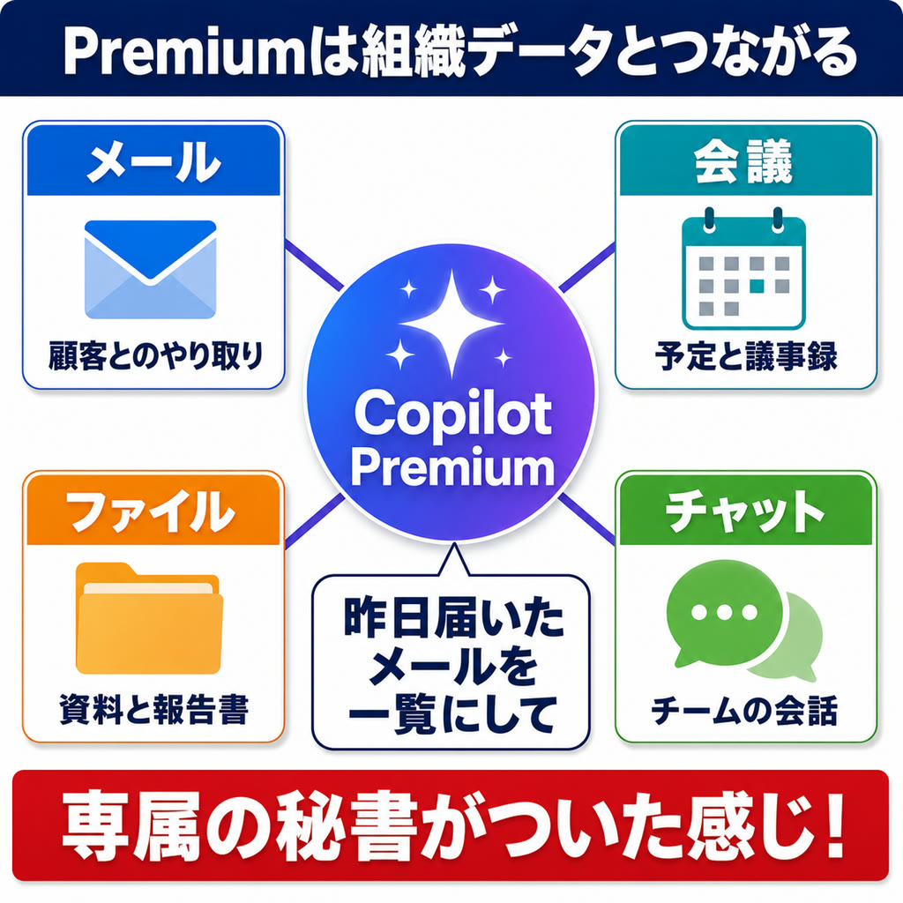
で、有料版のPremiumだと何が変わるのかというと、組織のデータ、つまり会社のメール、会議、ファイルの中身とつながるんですよ。例えば、昨日届いたメールを一覧にして、とか、先週の会議の要点をまとめて、みたいなことができちゃう。ここまで来ると、もう専属の秘書が一人ついた感じですね。
あとは、混み合っている時でも優先的に処理してもらえる、優先アクセスというのもついてきますね。
で、2026年のいま、Copilotはさらに、エージェントというAI社員の方向に進化しています。Work IQという頭脳が、皆さんのメールや会議、仕事のクセまで理解して、次にやるべきことを先回りで提案してくれるんですよ。資料を作っておいて、と頼んだら、勝手に進めておいてくれる世界が、もう始まっているんですね。
だからこそ、今のうちに基本を押さえておくのが大事なんです。
最後に、上達のコツを3つだけお伝えします。1つ目、お願いは具体的に。目標、文脈、形式を伝えること。
2つ目、一発で完璧を求めない。追いお願いで仕上げればいいんです。で、3つ目、まずは毎日1回使ってみる。
これだけで、1ヶ月後には手放せなくなってるんじゃないかなと思います。
で、明日からの最初の一週間、これだけやってみてください。1日目、Copilotを開いてみる。2日目、何か1つ質問する。
3日目、メールを1本下書きさせる。4日目、Excelの表を分析させる。5日目、長い文書を要約させる。
6日目、資料のたたき台を作らせる。で、7日目、浮いた時間で何をするか考える。ここまでできたら、皆さんはもう、社内のAI先進派ですよ。
はいということで、Microsoft Copilot入門、完全版、以上になります。ここまで聴いてくださって、ありがとうございました。まずは明日、会社のパソコンでCopilotを開いてみるところから始めていただけたらなと思います。
で、僕のYouTubeチャンネル、メンタエクセルでは、ExcelやAIで最強の個人になるための情報を発信していますので、そちらもぜひチェックしてみてください。それでは、一緒にスキルアップしていきましょう。お疲れ様でした。